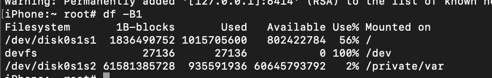
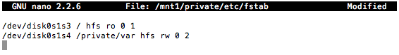

Tôi không phải người làm ra cái này, tôi chỉ hướng dẫn cách thực hiện. Mọi thứ đã có sẵn và nó sẽ dễ dàng thôi.
⚠️ Lưu ý quan trọng
- Hướng dẫn dành cho người dùng nâng cao.
- Các thao tác chỉnh phân vùng có thể làm thiết bị không khởi động nếu làm sai.
- Chỉ thử trên iPod Touch 4G.
- Không đổi tên các phân vùng thành
System– sẽ gây lỗi boot.
Yêu cầu
- macOS hoặc Linux
- iPod touch 4 iOS 6.1.6 đã Jailbreak
- Thêm repo
nyansatan.github.io/apttrong Cydia - Cài đặt: dualbootstuff, diskdev-cmds, nano, way out, openssh
1. Chuẩn bị rootfs
Hãy unzip ipsw vừa tải xuống, tìm tệp *.dmg có dung lượng lớn nhất chính là rootfs.
./dmg extract rootfs.dmg extract.dmg -k key fwdmg build extract.dmg UDZO.dmg2. Phân Vùng
Kết nối SSH (pass: alpine):
ssh root@device_ip
Nhập lệnh df -B1 để xem dung lượng. Tính toán dung lượng cho phân vùng thứ 2 và thực hiện resize:
hfs_resize /private/var XTiếp tục nhập gptfdisk /dev/rdisk0s1 và thực hiện các bước phân vùng.
Sau khi mount UDZO.dmg, lấy thông số và nhập tiếp các lệnh tạo phân vùng System và Data.
p enter
w enter Y enter3. Restoring rootfs
Khởi động lại, kết nối SSH và mount các phân vùng:
mkdir /mnt1
mkdir /mnt2
/sbin/newfs_hfs -s -v System -J -b 8192 -n a=8192,c=8192,e=8192 /dev/disk0s1s3
/sbin/newfs_hfs -s -v Data -J -b 8192 -n a=8192,c=8192,e=8192 /dev/disk0s1s4Restore file dmg:
asr restore --source /mnt2/UDZO.dmg --target /dev/disk0s1s3 --erase4. Thiết lập hệ thống
Thực hiện các lệnh mount và copy file hệ thống, keybag...
cp -a /var/keybags/systembag.kb /mnt2/keybagsSửa file fstab bằng nano:
nano /mnt1/private/etc/fstab
Lưu file (Ctrl+O) và thoát (Ctrl+X). Xóa Setup.app trong /mnt1.
5. Hoàn tất
Copy iBSS, iBEC7 vào thư mục gốc /. Copy các file còn lại vào /mnt1.
Dùng Way out để thiết lập dualboot.
Thanks
- @nyan_satan – Dualboot guide
- @Ralph0045 – Core concepts